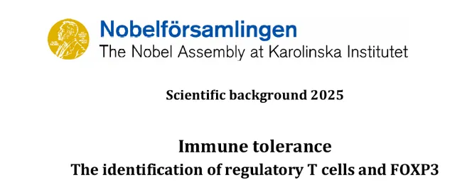
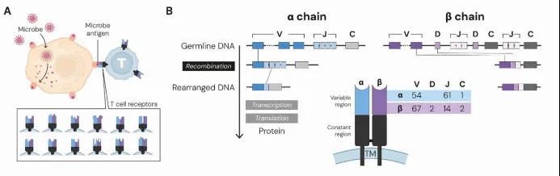
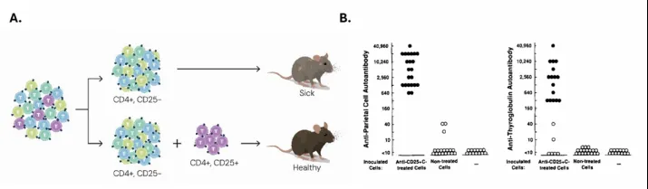
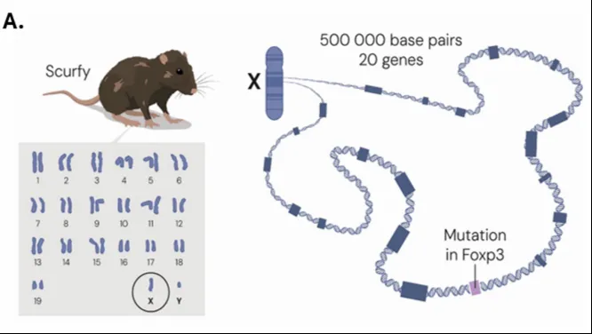
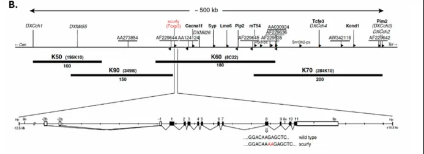

2025年诺奖，说的是Treg的什么故事？
原文：https://mp.weixin.qq.com/s?__biz=MzAwMzIzOTk5OQ==&mid=2247531388&idx=1&sn=9665384982b41f4715ca5b84aabf6db8&chksm=9b3c022cac4b8b3a1b4921ca2177ae2dd4ed8efc63d3a6c6a50bacc9a3017867a42cd37c6eb4#rd 合集：文献速递
一、写在前面
免疫系统旨在抵御感染，同时避免对自身组织产生有害反应。如何维持这种平衡一直是免疫学领域的长期难题。Mary E. Brunkow、Fred Ramsdell、Shimon Sakaguchi这三位诺贝尔生理学或医学奖得主的研究，为解开这一谜题提供了关键答案。

单细胞还得学，单细胞可谓是T Cell研究利器，更多T Cell相关内容，可以在公众号内检索：
临床问题切入到IF=38.6分文章| 单细胞多组学解析急性心肌炎中的特化CD8+效应T Cell
IF=9.6| 肝外胆管癌中的TIGIT表达及其对CD8+T细胞耗竭的影响对免疫治疗的启示
单细胞代码复写| 干细胞样CD4+ T细胞与自身免疫性血管炎
二、主要发现
他们定义了CD4+CD25+FOXP3+调节性T细胞（Treg细胞），并揭示了它们在控制自身反应性反应中的关键作用， 彻底改变了人们对免疫调节的理解，尤其是在自身耐受、自身免疫和肿瘤逃逸的背景下。
三、基础机制
●（一）抗原识别是如何实现的？
Susumu Tonegawa因揭示高度多样化 B细胞受体（BCR）库而获得了 1987年的诺贝尔生理学或医学奖， 这一揭示正是抗原识别的关键。在B细胞形成时，可变（V）、多样（D）和连接（J）基因会以组合的方式组装在一起，从而产生独特的重链（VDJ）和轻链（VJ）对，构成每个细胞中的功能性受体(Figure.1)。
**随后， Tak Mak和Mark Davis的团队发现了编码T细胞受体（TCR）的V、D和J基因的基因组位点。**与BCR类似，TCR也是通过V、D和J基因的重组形成的。这意味着T细胞和B细胞都通过类似的机制产生多样化的受体，从而能够识别广泛的抗原。这些发现为理解免疫系统的多样性和特异性提供了关键的分子机制。
除此之外，Peter Doherty和Rolf Zinkernagel 通过一系列实验揭示了MHC分子的关键功能。他们发现，T细胞只有在抗原与MHC分子结合并呈现在细胞表面时才会被激活。MHC分子在细胞表面呈递抗原肽，T细胞通过其TCR识别这些抗原肽-MHC复合物。因此T细胞可以分为CD4+ T辅助细胞和CD8+ 细胞毒性T细胞，分别识别MHC II类分子和MHC I类分子，它们在免疫反应中发挥互补作用。

Figure 1
●（二）免疫耐受是如何实现和维持的？
免疫耐受的实现和维持是一个复杂的过程，涉及多个层次的机制。Ray Owen 在1945年发现了同一胎盘的牛犊在出生后并没有对彼此的血型抗原产生免疫反应；Burnet 提出免疫耐受必须在胚胎期或早期生活中获得；Peter B. Medawar 后面又发现在一种近交小鼠品系的胎儿注射了来自另一种品系的细胞后，来自第二种品系的皮肤移植在小鼠出生后被接受，但来自第三种无关小鼠品系的皮肤移植则被排斥。这些早期实验的研究为理解这一过程提供了重要的线索。** **
在探索中心耐受的分子基础过程中， AIRE（自身免疫调节因子）基因的发现是关键一步。AIRE基因由Leena Peltonen和 Nobuyoshi Shimizu团队分别鉴定出来。AIRE作为一个转录因子，在胸腺的髓质胸腺上皮细胞（mTECs）中发挥作用，激活组织特异性抗原的表达。新生成的T细胞在胸腺中通过与这些抗原相互作用，被检测其潜在的自身反应性。如果T细胞表现出显著的自身反应性，它们将被消除，从而防止自身免疫反应的发生。这一机制确保了只有对自身抗原无反应性的T细胞才能成熟并进入外周免疫系统，从而维持免疫耐受，防止自身免疫疾病的发生。
四、关键环节
●（一）外周免疫耐受机制
尽管中心耐受机制在胸腺中有效地清除了大部分自身反应性T细胞，但仍有部分自身反应性T细胞能够逃逸并进入外周循环。为了进一步防止这些细胞引发自身免疫反应，免疫系统在外周还发展了一系列的耐受机制**。**** **
** **
主要包括：** **
一：调节性 T细胞** **
CD4**+CD25+FOXP3+**Tr** 细胞在胸腺中发育，并在外周组织中发挥关键作用。它们通过分泌抑制性细胞因子（如IL-10和TGF-β）和直接抑制效应T细胞的活化，维持免疫耐受。**诱导性 Treg细胞（iTreg细胞）**在某些特定的免疫环境中，外周的CD4+ T细胞可以被诱导分化为Treg细胞，这些细胞也参与维持外周免疫耐受。
**二：免疫抑制分子 **
CTLA-4 是一种共抑制分子，主要表达在T细胞表面。它通过与CD80和CD86结合，抑制T细胞的活化，从而维持免疫耐受。PD-1 是另一种共抑制分子，通过与PD-L1和PD-L2结合，抑制T细胞的活化和增殖，防止过度的免疫反应。
**三：**免疫细胞的无能化
当T细胞在没有共刺激信号的情况下被抗原激活时，它们会进入一种无能状态，无法有效增殖和发挥功能，类似地，B细胞在没有适当信号的情况下被抗原激活时，也会进入无能状态，从而避免对自身抗原的反应。
**四：**免疫抑制细胞
髓源性抑制细胞（ MDSCs） 在炎症和肿瘤微环境中发挥作用，通过分泌抑制性细胞因子和代谢产物，抑制T细胞和B细胞的活化。耐受性树突状细胞 通过在缺乏共刺激信号的情况下呈递抗原，使T细胞进入无能状态。** **
总而言之， 外周免疫耐受机制包括多种机制，**如 T细胞无能化、耐受性树突状细胞的作用、B细胞克隆无能以及调节性B细胞的抑制作用。**这些机制共同作用，确保免疫系统能够有效识别和清除外来病原体，同时避免对自身组织产生有害的免疫反应。
●（二）调节性T细胞
20世纪80年代末和90年代，Shimon Sakaguchi及其同事 表明CD4+CD25+ T细胞亚群在维持免疫自我耐受中起着关键作用。这些细胞能够抑制免疫反应，防止自身免疫性疾病的发生(Figure.2)，这一发现不仅证实了CD4+CD25+ T细胞在维持免疫自我耐受中的关键作用，还为调节性T细胞（Tregs）的研究奠定了基础。之后，研究人员开始更深入地探索Sakaguchi所识别的细胞的起源、机制和特征，科学家们发现这些细胞可以通过多种机制抑制传统T细胞的增殖和细胞因子产生，如直接接触；分泌如IL-10、IL-35和TGF-β等抑制性细胞因子或直接剥夺其他T细胞所需的生长因子IL-2而抑制它们的增殖等。

- Figure2
虽然CD4+CD25+ T细胞在维持耐受和预防自身免疫方面存在作用，但研究者们对该领域的怀疑仍然存在，因其缺乏一个明确的分子标记物用于研究，直至FOXP3 的发现，Mary Brunkow和Fred Ramsdell从scurfy免疫缺陷鼠出发，首先将scurfy突变定位到X染色体上的一个特定区域，之后发现这一突变为碱基插入导致的Foxp3基因的移码突变和提前终止(Figure.3)。
FOXP3的发现为调节性T细胞（Tregs）的研究提供了关键的分子标记物。FOXP3被证明是调节性T细胞发育和功能的关键转录因子。 之后，为进一步的验证，Brunkow和Ramsdell通过一系列遗传拯救实验，证明了野生型Foxp3基因能够拯救scurfy雄性小鼠免受疾病的影响。这些实验不仅验证了FOXP3基因在Tregs中的关键作用，还为理解自身免疫性疾病的机制提供了重要的遗传学证据（Table.1）。
Brunkow和Ramsdell在发现FOXP3基因后，迅速将注意力转向了IPEX综合征，这是一种罕见的遗传性人类疾病。他们通过与Hans Ochs和Robert Wildin的合作，证明了FOXP3基因的突变是导致IPEX综合征的原因。


- Figure3
4.
●（三）Treg细胞在免疫耐受中的定位
Tregs细胞是获得性耐受的重要组成部分，它们通过在胸腺中获得调节功能，并在外周组织中执行这些功能，确保免疫系统不会对自身组织产生反应。尽管中心耐受（胸腺中的负向选择）是防止自身免疫反应的主要机制，但Treg细胞在外周耐受中起着补充作用，确保那些逃逸胸腺清除的自身反应性T细胞不会引发自身免疫性疾病，Treg细胞在整个生命周期中持续发挥作用，通过抑制其他免疫细胞的活化，维持免疫系统的平衡，防止过度的免疫反应。
在实验中，Foxp3的发现使研究人员能够利用流式细胞术和遗传工具精确识别和研究Treg细胞。通过在体外提供适当的细胞因子刺激（通常是高剂量的IL-2和TGF-β），可以从传统的CD4+ T细胞中生成诱导型Treg细胞，Treg细胞的复杂性在于它们的发育途径和在不同疾病背景下的行为。未来的研究将继续探索Treg细胞的不同亚群、它们的发育途径，以及它们在各种疾病中的作用，这将为开发新的治疗策略提供重要依据。
五、临床中靶向Treg细胞的方法
Treg细胞的治疗潜力尚未充分开发。尽管Treg细胞疗法尚未广泛应用于临床，但许多调节其活性的策略正在研究中，其中一些已在临床试验中进行评估，包括多克隆Treg细胞的体外扩增，使用IL-2刺激等方法在体外扩增多克隆Treg细胞，然后进行回输；构建CAR-Tregs，由靶向抗体结构域和Tregs组成；构建TCR-Tregs；体内扩增Treg细胞和靶向肿瘤浸润性Treg细胞等。 这些研究不仅为治疗自身免疫性疾病、过敏性疾病和癌症提供了新的方向，还为改善器官移植后的结果提供了可能。

六、总结讨论
今年诺贝尔奖得主在调节性T细胞（Tregs）和FOXP3的鉴定及其在免疫耐受中的作用方面的成就，是科学坚持不懈和将临床观察与基础研究相结合的力量的证明。从早期对免疫耐受的研究，到备受争议的抑制性T细胞假说，再到通过CD4+CD25+和FOXP3对Treg细胞的分子定义，这一历程促成了一个揭示免疫调节基本原理的广阔领域。随着我们对Treg细胞的理解不断加深，我们利用它们的力量进行治疗的潜力也在增加—保护我们免受自身免疫和免疫病理的双重威胁，同时确保免疫系统的稳态**。**
单细胞还得学，用单细胞研究Treg走起来：
参考： https://www.nobelprize.org/uploads/2025/10/advanced-medicineprize2025.pdf

如何联系我们

 留一个领取资料、开箱即用的单细胞分析镜像的微信号[Biomamba_zhushou]，方便各位随时交流。同时我们也构建了交流群矩阵，欢迎大家入群讨论。
大家可以阅读完这几篇之后添加给生信入门初学者的小贴士
没有检索，就没有发言权
留一个领取资料、开箱即用的单细胞分析镜像的微信号[Biomamba_zhushou]，方便各位随时交流。同时我们也构建了交流群矩阵，欢迎大家入群讨论。
大家可以阅读完这几篇之后添加给生信入门初学者的小贴士
没有检索，就没有发言权
已有生信基地联系方式的同学无需重复添加

 您点的每个赞和在看，我都认真当成了喜欢
您点的每个赞和在看，我都认真当成了喜欢